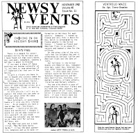

Ca$hing In On Holiday $how$
8/20/2011
By Arty Freda
From Newsy Vents*
I have found that every month, day, and week: somewhere, somehow, a holiday is about to blossom. Easter, Thanksgiving, Halloween, and Christmas have their share of bookings but there are steps you can take to find out about other holidays throughout the year.
Calendars and appointment books provide some such information, such as Jewish New Year, Yom Kippur, and Hanukkah. Do research on holidays celebrated in other counties. Example: When researching France, I found July 14th was Bastille Day, also celebrated by French living in the US. I looked up French and American Clubs in my phone directory and booked a show for the children. Italy has its Columbus Day which is celebrated by various Italian and American Clubs, and the Sons of Italy.
There are holidays such as Memorial Day, Independence Day, Labor Day, Veterans Day, plus other State and Legal Holidays. In such cases your direct contact could be Service Clubs, Veterans Organizations, Women's Auxiliaries, churches, schools (public and private), libraries - even nursery schools.
Remember, many clubs and various lodges are always ready for a party! Businesses hold annual employees' picnics and a picnic is a holiday in my mind. And each an every show has the potential of starting a chain r
{kind=link}

eaction - you never know who is in attendance who will be in need of your future services. The whole world is a stage and awaits whatever you can offer in the field of entertainment.* * * * *
From Mr. D: *The above was adapted from the cover article of the November 1982 issue of Newsy Vents. I have a set of 5 different issues of 1982 to give away in today's drawing, and the winner is: Mark Schrader